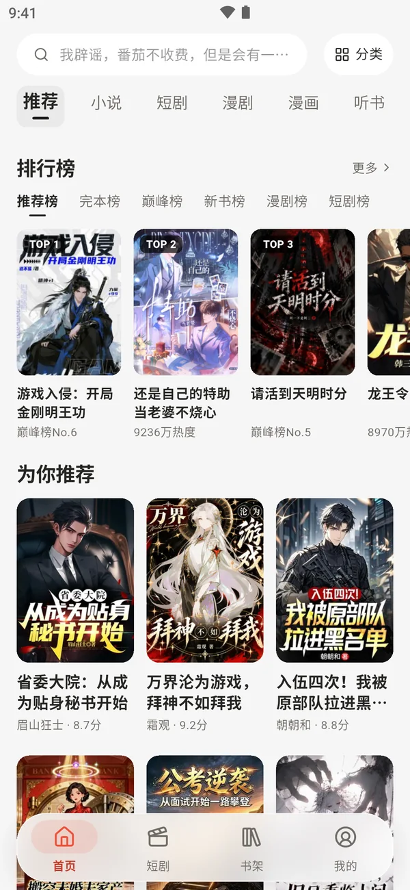
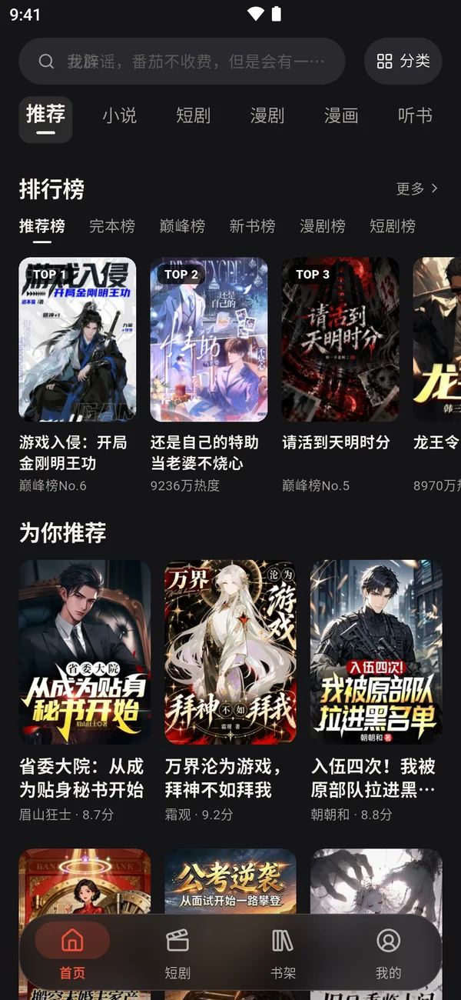
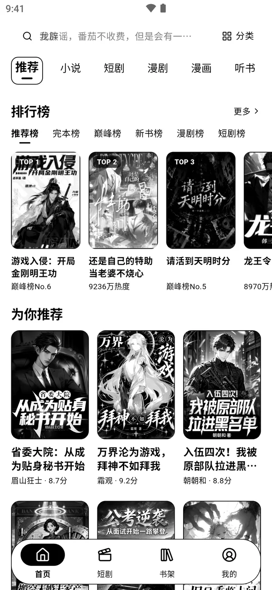
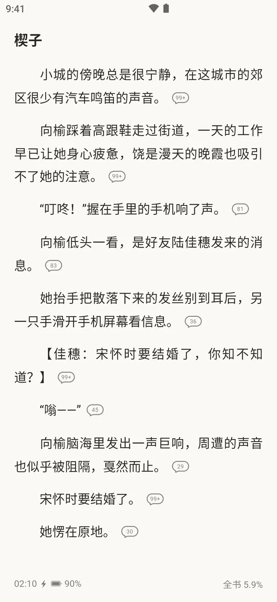
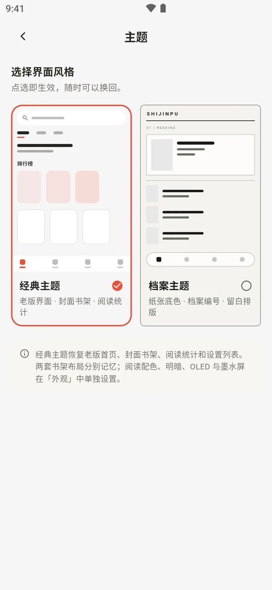
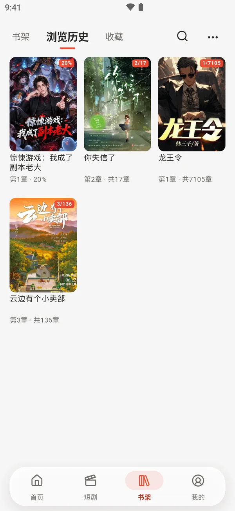
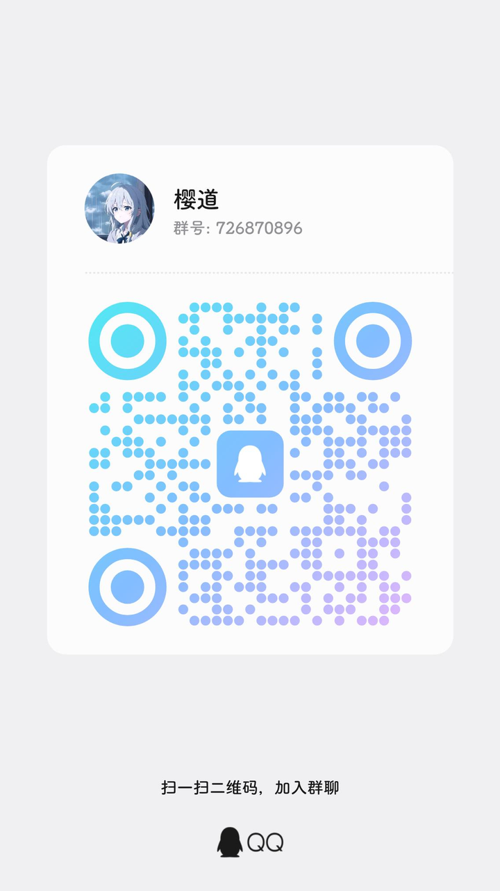

01 / NOVEL
小说
在线阅读，也能导入自己的 TXT / EPUB 电子书。字体、字号、翻页方式随心调。
在线阅读导入图书
开源 · Android / Windows · GPL-3.0
小说、听书、短剧、漫剧、漫画，都收在同一间铺子里。在线看故事，也能导入自己的电子书，把喜欢的作品和阅读进度留在书架里。



浅色深色墨水屏
FIVE FORMS · ONE SHELF
在线阅读，也能导入自己的 TXT / EPUB 电子书。字体、字号、翻页方式随心调。
在线阅读导入图书
系统朗读和真人有声书，可调倍速、定时停止，支持后台播放。
系统朗读有声书
短剧集中浏览，自动保存播放进度，下次打开接着看。
集中浏览进度记忆
漫剧和漫画同架浏览，按作品名称或编号搜索。
按名搜索按编号搜索
看到哪记到哪。收藏、分组整理，把读过的作品留在自己的书架上。
自动记录收藏分组
APPEARANCE · CLASSIC
白底、红字与封面网格。排行榜、推荐流和封面书架一眼看清，白天阅读干净不刺眼。
浅色、深色与墨水屏可以跟随系统，也能在「设置 → 外观」里手动切换；经典与档案两套界面风格同样随时互换。
READ · WK-00071
点击屏幕中间就能调整阅读设置。六种底色之外，字体、字号与翻页方式也都能改。
末班渡轮离开码头时，岸上的灯恰好一盏盏亮起来。夏遥把书合在膝上，听见风从翻起的纸页之间穿过。


主题 · 经典 / 档案SHELF · OFFLINE · BACKUP
收藏喜欢的作品，按分组整理。想找的时候，按名称或编号搜索。
提前下载内容，没网时继续阅读或播放。启动时还能直接选择「离线阅读」。
导出备份文件，传到新设备后选择「从备份文件恢复」，预览确认再写入。
备份不包含本地电子书、下载缓存、阅读时长、划线和设置。导出前先退出阅读或暂停播放，让进度保存；本地书文件请单独保留。

“把喜欢的作品和进度，
留在自己的书架上。”
书架、进度和缓存保存在设备上。只有开启 AI 校对或云端同步时，相关内容才会发送到你选择的服务——使用前请阅读应用内说明。
DOWNLOAD · V1.0.201
Android 7.0 及以上
app-arm64-v8a-release.apk大多数手机
Windows 10 / 11，64 位
fqapp.exe下载压缩包，完整解压后运行
FAQ · SUPPORT
可以看已导入的电子书、读已缓存的章节、播放已下载的媒体。只有已下载完成的内容才能离线使用，搜索和获取新内容仍需要联网。启动时可选择「离线阅读」。
先检查网络，换个网络或重启应用再试。在线内容依赖第三方服务，对方调整或网络波动可能导致暂时不可用。
持续失败请在 GitHub 提交反馈，附上应用版本、设备型号、作品名称或编号，以及错误截图。
在「我的 → 备份与导入」导出备份文件，传到新设备后选择「从备份文件恢复」，预览并确认。
备份包含收藏、书架分组、已保存的阅读和播放进度、已看剧集；不包含本地电子书、下载缓存、阅读时长、划线和设置。本地书文件请单独保留。
检查媒体音量，并确认设备安装了语音引擎和中文音色。在「设置 → 听书 → 系统朗读」选择可用语音；Windows 用户可在系统语音设置中安装中文音色。
免费，并且以 GPL-3.0 协议开源，代码在 GitHub 上公开。如果它让你的阅读和追剧方便了一点，可以自愿赞助支持后续更新。
书架、进度和缓存保存在你的设备上。如果开启 AI 校对或云端同步，相关内容会发送到你选择的服务，使用前请阅读应用内说明。
JOIN · SUPPORT

726870896
用 QQ 扫码，或搜索群号加入。分享使用心得、交流问题。